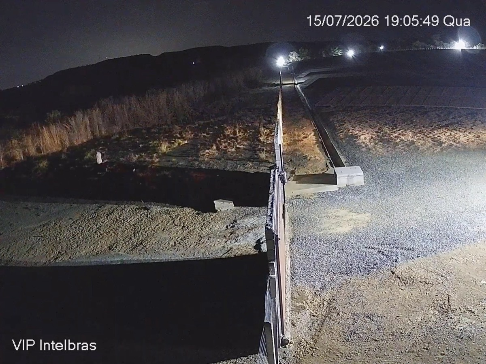
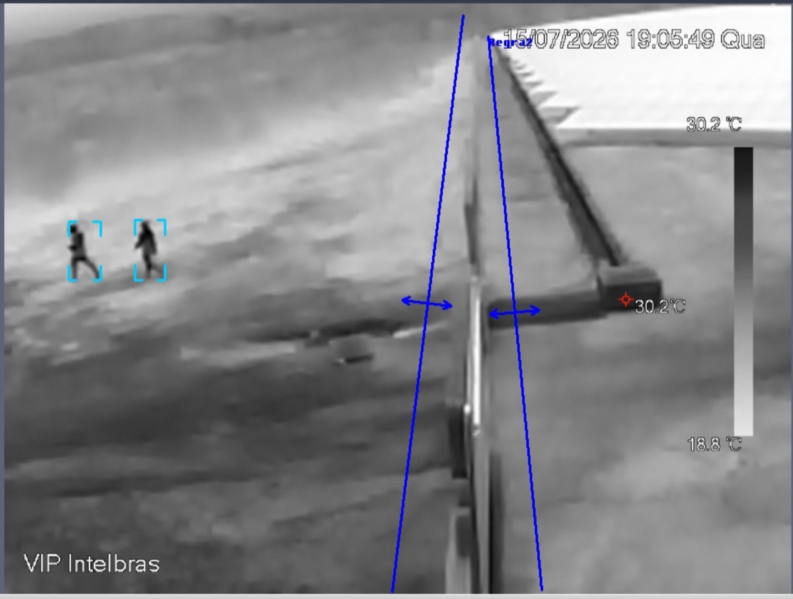

Resumo
Este documento estabelece o padrão técnico corporativo dos sistemas de circuito fechado de televisão (CFTV) das unidades da Binatural, empresa produtora de biodiesel. O padrão define critérios de classificação dos ambientes por criticidade, condição de iluminação e risco, sete padrões de câmera com requisitos mínimos de desempenho e a especificação aplicável a cada tipologia de área encontrada nas unidades, das salas administrativas e do setor de recursos humanos às áreas de calor, à subestação e às áreas classificadas com risco de atmosfera explosiva. Estabelece também as diretrizes de segurança perimetral com analíticos de vídeo e câmeras termográficas, o método de dimensionamento da gravação para retenção mínima de 30 dias, os requisitos de rede, energia e proteção contra surtos, as regras de privacidade conforme a Lei Geral de Proteção de Dados Pessoais, a nomenclatura dos equipamentos e os procedimentos de comissionamento, operação e manutenção. O corpo do padrão não contém quantitativos: a aplicação a cada unidade é registrada em apêndice próprio, com diagnóstico, enquadramento dos setores, quantidades e dimensionamento.
Palavras-chave: CFTV; videomonitoramento; padrão técnico; biodiesel; áreas classificadas; segurança perimetral.
Introdução
A Binatural opera unidades industriais de produção de biodiesel que compartilham características construtivas e operacionais: portarias com controle de acesso de pessoas e veículos, pátios de caminhões, balanças, áreas administrativas, utilidades térmicas, subestações, laboratórios, salas de controle e áreas de processo, armazenagem e carregamento que manipulam substâncias inflamáveis. Essa semelhança permite que o videomonitoramento de todas as unidades seja projetado com os mesmos critérios, os mesmos padrões de equipamento e a mesma forma de operação.
Este documento consolida esses critérios em um padrão técnico corporativo. Sua adoção garante o mesmo nível de proteção para riscos equivalentes em unidades diferentes, simplifica a compra e a reposição de equipamentos, permite que as equipes de segurança e de tecnologia operem qualquer unidade da mesma forma e cria uma base comum para auditorias, expansões e integração futura do monitoramento.
1.1 Objetivo
Estabelecer os requisitos técnicos mínimos para o projeto, a especificação, a instalação, o comissionamento, a operação e a manutenção dos sistemas de CFTV das unidades da Binatural.
1.2 Campo de aplicação
Este padrão aplica-se:
- às novas implantações de CFTV em qualquer unidade da Binatural;
- à modernização e à expansão de sistemas existentes;
- à substituição de equipamentos em manutenção corretiva, que deve seguir o padrão vigente e não reproduzir o equipamento retirado;
- à contratação de projetos, fornecimentos e serviços de terceiros, que devem atender integralmente a este documento.
Sistemas existentes que não atendem ao padrão podem permanecer em operação até a modernização da unidade, desde que a não conformidade seja registrada no apêndice correspondente, com plano de adequação. A exceção são as câmeras comuns instaladas dentro de zona classificada: por constituírem fonte de ignição, devem ser retiradas ou substituídas de imediato.
1.3 Estrutura do documento e aplicação nas unidades
O documento é dividido em duas partes. O corpo do padrão, nas seções 1 a 19, é corporativo e não contém quantitativos: define critérios, especificações e procedimentos válidos para qualquer unidade. A aplicação a cada unidade é registrada em apêndice próprio, identificado por letra (Apêndice A, B, C e assim por diante), que segue o roteiro da seção 18 e reúne o diagnóstico, o enquadramento dos setores nas tipologias, as quantidades e o dimensionamento da unidade.
As revisões do corpo do padrão são controladas pela Binatural e valem para todas as unidades a partir da data de emissão; as revisões de um apêndice afetam apenas a unidade correspondente.
Referências normativas
Os documentos a seguir são indispensáveis à aplicação deste padrão. Considera-se sempre a edição vigente na data do projeto, incluindo emendas. As referências completas constam ao final do documento.
Quadro 1 – Referências normativas e aplicação no padrão
| Norma ou documento | Aplicação no padrão |
|---|---|
| CFTV, segurança da informação e privacidade | |
| IEC 62676-4 | Sistemas de vigilância por vídeo: diretrizes de aplicação. Base dos critérios de densidade de pixels (DORI). |
| ABNT NBR ISO/IEC 27002 | Controles de segurança da informação; controle 7.4, monitoramento da segurança física. |
| ANSI/TIA-942 | Infraestrutura de data centers; referência para o monitoramento do CPD. |
| ONVIF Perfis S e T | Interoperabilidade entre câmeras, gravadores e software de gestão. |
| Lei nº 13.709/2018 (LGPD) | Tratamento de dados pessoais, incluindo imagens de pessoas identificáveis. |
| Áreas classificadas | |
| ABNT NBR IEC 60079-0 | Atmosferas explosivas: equipamentos, requisitos gerais. |
| ABNT NBR IEC 60079-1 | Proteção de equipamento por invólucro à prova de explosão “d”. |
| ABNT NBR IEC 60079-10-1 | Classificação de áreas: atmosferas explosivas de gás. |
| ABNT NBR IEC 60079-14 | Projeto, seleção e montagem de instalações elétricas em atmosferas explosivas. |
| ABNT NBR IEC 60079-17 | Inspeção e manutenção de instalações elétricas em atmosferas explosivas. |
| Portaria INMETRO nº 115/2022 | Certificação compulsória de equipamentos para atmosferas explosivas. |
| NR-20 | Segurança e saúde no trabalho com inflamáveis e combustíveis. |
| Infraestrutura, instalações elétricas e segurança do trabalho | |
| ABNT NBR 14565 | Cabeamento estruturado; limite de 90 m no enlace permanente. |
| ABNT NBR 16415 | Caminhos e espaços para cabeamento estruturado. |
| ABNT NBR 5410 | Instalações elétricas de baixa tensão. |
| ABNT NBR 5419 (partes 1 a 4) | Proteção contra descargas atmosféricas; parte 4, sistemas elétricos e eletrônicos (DPS). |
| ABNT NBR 14039 | Instalações elétricas de média tensão (subestações). |
| ABNT NBR IEC 60529 | Graus de proteção providos por invólucros (código IP). |
| ABNT NBR 17240 | Sistemas de detecção e alarme de incêndio; o CFTV não os substitui. |
| NR-10 e NR-35 | Segurança em eletricidade e trabalho em altura. |
| Apresentação do documento | |
| ABNT NBR 10719, NBR 14724, NBR 6023, NBR 6024, NBR 6027 e NBR 6028 | Estrutura e apresentação de relatórios técnicos, referências, numeração progressiva, sumário e resumo. |
Fonte: elaborado pela A+.com Engenharia e Tecnologia (2026).
Termos e definições
Para os efeitos deste documento, aplicam-se os seguintes termos e definições.
3.1 Área classificada: Área na qual uma atmosfera explosiva de gás está presente, ou pode estar presente, em quantidade que exija precauções especiais para a construção, a instalação e a utilização de equipamentos (ABNT NBR IEC 60079-10-1).
3.2 Analítico de vídeo: Função de software, embarcada na câmera ou no gravador, que interpreta a imagem e gera eventos automaticamente, como intrusão em área, cruzamento de linha ou classificação de pessoas e veículos.
3.3 Cerca virtual: Analítico que gera alarme quando um alvo entra ou permanece em uma região definida da imagem.
3.4 Criticidade: Grau de consequência de um evento não detectado ou não registrado no ambiente, classificado de C1 a C4 (seção 5.1).
3.5 DORI: Classificação da finalidade da imagem em detecção, observação, reconhecimento e identificação, associada a uma densidade mínima de pixels sobre o alvo (IEC 62676-4).
3.6 EPL (nível de proteção de equipamento): Nível de proteção atribuído ao equipamento conforme a probabilidade de se tornar fonte de ignição (ABNT NBR IEC 60079-0).
3.7 Full Color: Tecnologia de câmera que mantém imagem colorida à noite por meio de sensor de alta sensibilidade e iluminação branca auxiliar integrada.
3.8 Super Color: Tecnologia de câmera que mantém imagem colorida em baixa iluminação principalmente pelo sensor de alta sensibilidade e pela lente de grande abertura, com pouca ou nenhuma iluminação auxiliar.
3.9 Câmera termográfica: Câmera que forma imagem a partir da radiação infravermelha térmica emitida pelos corpos, sem depender de iluminação.
3.10 Padrão de câmera: Conjunto de requisitos mínimos de tecnologia e desempenho identificado pelos códigos T1 a T7 (seção 6).
3.11 Tipologia de área: Conjunto de ambientes com função, risco e condição de iluminação semelhantes, que recebem a mesma especificação de CFTV (seção 7).
3.12 Unidade: Filial industrial ou administrativa da Binatural na qual o padrão é aplicado.
3.13 WDR (faixa dinâmica ampla): Capacidade da câmera de registrar ao mesmo tempo regiões muito claras e muito escuras da cena, como em contraluz de portas e janelas.
3.14 Zona: Subdivisão da área classificada conforme a frequência e a duração da atmosfera explosiva: zona 0, zona 1 e zona 2.
Diretrizes gerais
Os sistemas de CFTV das unidades da Binatural devem atender às seguintes diretrizes:
- Arquitetura 100% IP: Não se admitem câmeras analógicas nem gravadores híbridos em novas instalações; os existentes são substituídos na modernização da unidade;
- Padrão mínimo: Nenhuma câmera do sistema tem especificação inferior ao padrão T1, e nenhuma câmera externa tem especificação inferior ao padrão T3;
- Seleção pelo risco: A tecnologia de cada câmera é definida pela tipologia da área (seção 7) e pela matriz de seleção (seção 5.3), e não pelo menor custo do ponto;
- Precedência da área classificada: Dentro de zona classificada prevalece sempre o padrão T7, independentemente das demais características do ambiente;
- Gravação centralizada: Gravadores instalados no CPD da unidade, com energia estabilizada e nobreak, e retenção mínima de 30 dias em gravação contínua;
- Detecção ativa: Perímetro e áreas externas críticas usam analíticos com classificação de alvos, para que o sistema alerte o operador em vez de apenas registrar;
- Rede segregada: O CFTV opera em VLAN própria, isolada da rede corporativa e da rede de automação industrial;
- Privacidade desde o projeto: Posicionamento e enquadramento respeitam a LGPD já na concepção (seção 14);
- Interoperabilidade: Equipamentos da linha de referência adotada pela Binatural ou equivalentes técnicos, compatíveis com ONVIF e com o software de gestão padrão, para permitir a intercambialidade entre unidades;
- Rastreabilidade: Todo equipamento identificado conforme a nomenclatura da seção 15 e registrado na documentação como construído (as built).
Critérios de classificação dos ambientes
A especificação de cada câmera resulta de quatro perguntas, aplicadas nesta ordem: o ponto está dentro de zona classificada? O ambiente é interno ou externo? Qual é a criticidade do ambiente? Como é a iluminação? As respostas são combinadas na matriz de seleção da seção 5.3.
5.1 Criticidade
A criticidade expressa a consequência de um evento não detectado ou não registrado. É atribuída a cada setor no apêndice da unidade, com base no quadro a seguir.
Quadro 2 – Níveis de criticidade dos ambientes
| Nível | Definição | Exemplos |
|---|---|---|
| C1 – Baixa | Ambientes internos administrativos, sem ativos de valor nem risco operacional, com iluminação controlada. | Escritórios, RH, diretoria, coordenação, salas de reunião |
| C2 – Média | Áreas internas de apoio e de circulação, com fluxo de pessoas e ativos de valor moderado. | Recepções, circulações, oficina, refeitório |
| C3 – Alta | Acessos, áreas externas, ativos de valor e pontos de controle fiscal ou logístico. | Portaria, estacionamentos, pátio, balança, almoxarifado, laboratório, perímetro |
| C4 – Crítica | Infraestrutura essencial e áreas com risco de processo, cuja falha ou sinistro interrompe a operação ou expõe pessoas a risco. | CPD, subestação, sala de controle, caldeiras, processo, tancagem, carregamento |
Fonte: elaborado pela A+.com Engenharia e Tecnologia (2026).
5.2 Condição de iluminação
Quadro 3 – Condições de iluminação e efeito na escolha da câmera
| Condição | Característica | Efeito na escolha |
|---|---|---|
| I1 – Controlada | Iluminação artificial uniforme e permanente. | Admite os padrões T1 e T2. |
| I2 – Contraluz | Portas e fachadas de vidro, docas abertas, grandes diferenças de luminosidade na mesma cena. | Exige WDR real: padrão T2 ou superior. |
| I3 – Deficiente | Iluminação irregular, sombras, galpões de pé-direito alto, áreas operacionais com pouca luz. | Padrão T4. |
| I4 – Noturna externa | Área externa com iluminação variável ou ausente no período noturno. | Padrão T3 como mínimo; T5 em perímetro extenso. |
Fonte: elaborado pela A+.com Engenharia e Tecnologia (2026).
5.3 Matriz de seleção da câmera
A matriz define o padrão mínimo de cada ponto. Quando um ponto se enquadra em mais de uma condição, adota-se a de menor ordem. O projetista pode especificar padrão superior, com justificativa, mas nunca inferior.
Quadro 4 – Matriz de seleção do padrão de câmera
| Ordem | Condição do ponto | Padrão | Observação |
|---|---|---|---|
| 1 | Dentro de zona classificada | T7 | Prevalece sobre todas as demais condições. |
| 2 | Área externa, qualquer criticidade | T3 | Mínimo obrigatório; T5 complementar em perímetro extenso, fontes de calor e ativos elétricos. |
| 3 | Área interna ou coberta com iluminação deficiente e alta densidade de pessoas ou equipamentos | T4 | Dispensa iluminação auxiliar que ofuscaria operadores. |
| 4 | Área interna de criticidade C2, C3 ou C4 | T2 | Padrão das áreas internas operacionais. |
| 5 | Área interna de criticidade C1 com iluminação controlada | T1 | Uso restrito e justificado. |
| 6 | Ambiente amplo com necessidade de visão geral a partir do teto | T6 | Complementar; não substitui a câmera de identificação do acesso. |
Fonte: elaborado pela A+.com Engenharia e Tecnologia (2026).
5.4 Critério de densidade de pixels (DORI)
O posicionamento e a lente de cada câmera seguem a finalidade da imagem, conforme a IEC 62676-4. A densidade de pixels é a resolução horizontal da câmera dividida pela largura da cena no plano do alvo. A última coluna da tabela indica a largura máxima da cena que uma câmera de 2 MP (1.920 pixels horizontais) cobre em cada nível; para larguras maiores, aumenta-se a resolução, reduz-se o campo de visão ou acrescenta-se uma câmera.
Tabela 1 – Níveis DORI e largura máxima de cena para câmera de 2 MP
| Nível | Densidade mínima | Finalidade | Largura máx. (2 MP) | Aplicação típica |
|---|---|---|---|---|
| Detecção | 25 px/m | Perceber a presença de pessoa ou veículo | 76,8 m | Perímetro, cerca virtual, termografia |
| Observação | 62 px/m | Acompanhar ações e movimentação | 31,0 m | Pátios, galpões, vias internas |
| Reconhecimento | 125 px/m | Reconhecer pessoa conhecida | 15,4 m | Circulações, áreas operacionais |
| Identificação | 250 px/m | Identificar pessoa desconhecida | 7,7 m | Portarias, portões, CPD, balança |
Fonte: adaptado de IEC 62676-4; largura máxima calculada pela A+.com Engenharia e Tecnologia (2026).
Padrões de câmera
O padrão define sete níveis de câmera, identificados de T1 a T7. Os modelos citados são referências de mercado da linha Intelbras, adotada pela Binatural; modelos equivalentes de qualquer fabricante podem ser especificados desde que atendam a todos os requisitos desta seção e sejam compatíveis com os gravadores e o software de gestão.
6.1 Requisitos comuns a todos os padrões
Todas as câmeras do sistema devem atender, no mínimo, aos seguintes requisitos:
- Sensor CMOS de varredura progressiva e resolução mínima de 2 MP (1.920 × 1.080 pixels), exceto no canal térmico do padrão T5;
- Compressão H.265 com modo de codificação inteligente, além de H.264, e no mínimo dois fluxos de vídeo simultâneos;
- Conformidade com os perfis ONVIF S e T;
- Sincronismo de horário por NTP;
- Acesso por HTTPS, gestão de usuários com níveis de permissão e firmware atualizável com suporte ativo do fabricante;
- Alimentação PoE conforme IEEE 802.3af ou 802.3at, exceto quando a folha de dados exigir fonte dedicada;
- Grau de proteção mínimo IP67 nas câmeras externas e IK10 nas câmeras dome sujeitas a vandalismo ou impacto (ABNT NBR IEC 60529);
- Faixa de temperatura de operação compatível com o local de instalação.
6.2 Quadro-resumo dos padrões
Quadro 5 – Padrões de câmera adotados
| Padrão | Tecnologia | Referência de mercado | Uso principal |
|---|---|---|---|
| T1 | IR convencional 2 MP | Intelbras VIP 1230 (B/D) | Ambientes internos C1 com iluminação controlada |
| T2 | Série 3000 · IR 2 MP | Intelbras VIP 3230 (B/D) | Áreas internas operacionais (C2 a C4) |
| T3 | Full Color 2 MP com IA | Intelbras VIP 3230 FC+ IA (B/D) | Todas as áreas externas |
| T4 | Super Color 2 MP | Intelbras VIP 3230 SC IA (B/D) | Ambientes com iluminação deficiente e muitas pessoas ou equipamentos |
| T5 | Termográfica | Intelbras VIP 5203 | Perímetro, fontes de calor, ativos elétricos e inflamáveis |
| T6 | Fisheye 360° | Intelbras fisheye VIP5500 F IA | Visão geral de ambientes amplos a partir do teto |
| T7 | Antiexplosão (Ex) | Câmera Ex certificada ou câmera IP em invólucro Ex d certificado | Pontos dentro de zona classificada |
Fonte: elaborado pela A+.com Engenharia e Tecnologia (2026).
6.3 Especificação dos padrões
6.3.1 Padrão T1 – IR convencional 2 MP
Câmera IP de entrada, com imagem colorida de dia e monocromática à noite por infravermelho. Atende ambientes internos de baixa criticidade e iluminação controlada, nos quais tecnologia superior não traria ganho proporcional ao custo. Requisitos adicionais:
- alcance de infravermelho de no mínimo 20 m;
- WDR digital;
- formato dome ou bullet compacto;
- uso exclusivamente interno, em ambientes de criticidade C1.
6.3.2 Padrão T2 – VIP 3230 (B/D) - 2 MP
Padrão das áreas internas operacionais. Diferencia-se do T1 pelo WDR real, que preserva rostos e detalhes em contraluz, pela compressão mais eficiente e pelo processamento de imagem superior. Requisitos adicionais:
- WDR real de no mínimo 120 dB;
- alcance de infravermelho de no mínimo 30 m;
- codificação H.265 inteligente;
- gravação local em cartão de memória, desejável, para preservar imagens em falha de rede.
6.3.3 Padrão T3 – VIP 3230 FC+ IA (B/D) – 2MP
Padrão mínimo de todas as áreas externas. A iluminação branca auxiliar mantém a imagem colorida 24 horas e preserva a cor de veículos e vestimentas, informação decisiva na investigação de ocorrências noturnas e perdida pelas câmeras de infravermelho. Requisitos adicionais:
- iluminação branca auxiliar com alcance de no mínimo 30 m e acionamento inteligente por evento ou por luminosidade;
- analíticos embarcados de intrusão em área, cruzamento de linha e classificação de pessoas e veículos;
- WDR real de no mínimo 120 dB e grau de proteção IP67;
Junto a vias públicas e vizinhança residencial, avalia-se o ofuscamento causado pela luz branca e ajustam-se a intensidade e o ângulo da iluminação.
6.3.4 Padrão T4 – VIP 3230 SC IA (B/D) - 2 MP
Padrão dos ambientes internos ou cobertos com iluminação deficiente e grande circulação de pessoas, veículos ou equipamentos. Mantém a imagem colorida com pouca luz sem depender de iluminação branca, que ofuscaria operadores de empilhadeiras e máquinas. Requisitos adicionais:
- sensor de alta sensibilidade e lente de grande abertura (f/1,0 ou equivalente);
- WDR real de no mínimo 120 dB;
- grau de proteção IP67 em ambientes com poeira, umidade ou névoa de óleo.
6.3.5 Padrão T5 – Termográfica VIP 5203
Forma imagem pela radiação térmica emitida pelos corpos, sem depender de luz, e não é afetada por escuridão, fumaça leve, neblina ou faróis. Em plantas que manipulam inflamáveis, cumpre duas funções: detecção perimetral a longa distância e prevenção de incêndio pela detecção de pontos quentes. Requisitos adicionais:
- sensor térmico não refrigerado (microbolômetro de óxido de vanádio) com NETD de no máximo 50 mK;
- canal visível de no mínimo 2 MP (câmera bi-espectral), recomendado para identificar o evento detectado;
- analíticos de intrusão no canal térmico;
- medição de temperatura com alarme por limiar nas aplicações de prevenção de incêndio e de pontos quentes;
- lente definida pela distância de detecção requerida e grau de proteção IP67.
Câmeras bi-espectrais geram dois fluxos de vídeo e normalmente ocupam dois canais no gravador. Essa condição deve ser verificada na folha de dados e considerada na alocação de canais e no cálculo de armazenamento.
6.3.6 Padrão T6 – Fisheye 360° VIP 5500 F IA
Cobre um ambiente inteiro a partir de um único ponto no teto. A correção de distorção (dewarping), no gravador ou no software, gera vistas planas independentes. Requisitos adicionais:
- resolução de no mínimo 5 MP, preferencialmente 8 MP;
- visão de 360° em montagem de teto ou de 180° em parede;
- correção de distorção suportada pelo gravador ou pelo software de gestão;
- bitrate de referência superior ao das câmeras de 2 MP (seção 10.2).
6.3.7 Padrão T7 – Antiexplosão (Ex)
Obrigatório em todo ponto situado dentro de zona classificada. Pode ser uma câmera certificada para atmosfera explosiva ou uma câmera IP instalada em invólucro Ex d certificado, respeitados os limites de potência dissipada e de classe de temperatura do certificado. Requisitos adicionais:
- certificado de conformidade INMETRO para atmosfera explosiva, com marcação Ex visível;
- nível de proteção EPL Gb, no mínimo, adequado às zonas 1 e 2;
- grupo de gás IIB e classe de temperatura T4, no mínimo, o que cobre o metanol (grupo IIA, classe T1) com margem;
- tipo de proteção preferencial à prova de explosão (Ex d);
- invólucro em aço inoxidável AISI 316L, com grau de proteção IP66 ou superior;
- módulo de câmera com desempenho mínimo equivalente ao padrão T2;
- prensa-cabos, unidades seladoras e acessórios com certificação Ex.
Especificação por tipologia de área
Esta seção define a especificação de CFTV de cada tipologia de área encontrada nas unidades da Binatural. Na aplicação do padrão, cada setor levantado na unidade é enquadrado em uma ou mais tipologias e recebe a especificação correspondente. Setores sem tipologia correspondente são especificados pela matriz da seção 5.3 e propostos para inclusão na revisão seguinte deste padrão.
7.1 Quadro-resumo das tipologias
Quadro 6 – Resumo da especificação por tipologia de área
| Seção | Tipologia | Crit. | Padrão principal | Padrão complementar |
|---|---|---|---|---|
| 7.2 | Áreas administrativas: escritórios, RH, diretoria, coordenação e salas de reunião | C1 | T1 | T2 nos acessos com contraluz |
| 7.3 | Recepções e circulações internas | C2 | T2 | T6 em halls amplos |
| 7.4 | Portaria, guarita e controle de acesso | C3 | T3 nos portões, na cancela e na guarita; T2 na sala de vigilância | Câmera de leitura de placas (LPR) no acesso de veículos, recomendada |
| 7.5 | CPD e salas de TI e telecomunicações | C4 | T2 | Não se aplica |
| 7.6 | Estacionamento de funcionários | C3 | T3 com analíticos de IA | LPR no acesso de veículos (opcional); T5 em limites extensos sem iluminação |
| 7.7 | Pátio de caminhões e sala de motoristas | C3 | T3 nas vias, nas vagas e na fachada; T2 no interior da sala de motoristas | T5 no perímetro do pátio |
| 7.8 | Balança | C3 | T3 | LPR na entrada da plataforma e câmera de vista superior da carroceria |
| 7.9 | Almoxarifado | C3 | T4 no galpão; T3 nas docas e nos acessos externos | Não se aplica |
| 7.10 | Oficina de manutenção | C2 | T4 | Não se aplica |
| 7.11 | Caldeiras e geração de vapor (áreas de calor) | C4 | T4 nas áreas operacionais | T5 na fornalha e no estoque de combustível; T3 no entorno externo |
| 7.12 | Utilidades gerais: compressores, geradores, torres de resfriamento, ETA e ETE | C2 a C4 | T4 nas salas internas; T3 nas áreas externas | T5 em geradores e compressores de grande porte |
| 7.13 | Subestação e salas elétricas | C4 | T2 no interior; T3 no exterior, com cerca virtual | T5 sobre transformadores, barramentos e conexões |
| 7.14 | Laboratório de controle de qualidade | C3 | T2 | T7 na sala de reagentes e solventes, se classificada |
| 7.15 | Sala de controle e supervisório | C4 | T6 no teto | T2 no acesso à sala |
| 7.16 | Área de processo industrial | C4 | T7 dentro de zona classificada | T3 (externo) ou T4 (coberto) posicionadas fora da zona, observando a área a partir do limite |
| 7.17 | Parque de tanques e recebimento de insumos | C4 | T7 dentro de zona; T3 fora da zona | T5 sobre o parque de tanques e as bacias de contenção, instalada fora das zonas |
| 7.18 | Carregamento e descarregamento de produtos | C4 | T7 na plataforma, se em zona classificada | T4 (coberto) ou T3 (externo) fora da zona; LPR na entrada da plataforma |
| 7.19 | Perímetro da planta | C3 | T3 com analíticos de IA ao longo do muro ou da cerca | T5 em trechos extensos, sem iluminação ou de difícil acesso |
| 7.20 | Áreas de vivência e saúde ocupacional | C2 | T2 nas circulações e no acesso ao refeitório | Não se aplica |
Fonte: elaborado pela A+.com Engenharia e Tecnologia (2026).
7.2 Áreas administrativas: escritórios, RH, diretoria, coordenação e salas de reunião
Quadro 7 – Especificação – Áreas administrativas: escritórios, RH, diretoria, coordenação e salas de reunião
| Criticidade | C1 – Baixa |
| Ambiente | Interno, com iluminação artificial controlada (I1). |
| Padrão principal | T1 |
| Padrão complementar | T2 nos acessos com contraluz |
| Nível DORI | Reconhecimento (125 px/m) nos acessos; observação (62 px/m) nas circulações. |
| Posições obrigatórias | Acesso a cada conjunto de salas; circulação principal; acesso ao arquivo de documentos do RH. |
| Requisitos de instalação | Enquadrar acessos e circulações, nunca telas, documentos ou estações de trabalho; câmeras sem captação de áudio; nenhuma câmera no interior das salas de entrevista e de atendimento individual do RH. |
Fonte: elaborado pela A+.com Engenharia e Tecnologia (2026).
Ambientes de baixa criticidade e iluminação estável, nos quais o padrão mínimo T1 é suficiente para registrar quem entra e quem sai. A função da câmera nessas áreas é o controle de acesso, e não a vigilância do trabalho, e tecnologia superior não traz ganho proporcional ao custo.
O RH concentra dados pessoais e dados pessoais sensíveis dos empregados, como prontuários, atestados e informações de saúde e de dependentes. Por isso a câmera do RH registra o acesso ao setor e ao arquivo físico, mas não o interior das salas de entrevista e de atendimento, onde a captação de imagens seria desproporcional à finalidade de segurança (LGPD, art. 6º, inciso III, princípio da necessidade).
7.3 Recepções e circulações internas
Quadro 8 – Especificação – Recepções e circulações internas
| Criticidade | C2 – Média |
| Ambiente | Interno, com contraluz frequente em portas e fachadas de vidro (I2). |
| Padrão principal | T2 |
| Padrão complementar | T6 em halls amplos |
| Nível DORI | Identificação (250 px/m) no balcão e na porta de entrada; reconhecimento (125 px/m) nas circulações. |
| Posições obrigatórias | Porta de entrada, com a câmera voltada para o interior do prédio; balcão de recepção; corredores e escadas; acessos a áreas restritas. |
| Requisitos de instalação | Evitar a porta de vidro como fundo da cena; instalar a câmera de entrada entre 2,5 m e 3,0 m de altura, para captar rostos sem ângulo vertical excessivo. |
Fonte: elaborado pela A+.com Engenharia e Tecnologia (2026).
A recepção é o ponto em que visitantes e prestadores de serviço são identificados. A contraluz das portas de vidro escurece os rostos em câmeras sem WDR real, o que justifica o padrão T2 mesmo em ambiente interno de criticidade média.
7.4 Portaria, guarita e controle de acesso
Quadro 9 – Especificação – Portaria, guarita e controle de acesso
| Criticidade | C3 – Alta |
| Ambiente | Externo nos portões e na cancela (I4); interno na sala de vigilância (I1 ou I2). |
| Padrão principal | T3 nos portões, na cancela e na guarita; T2 na sala de vigilância |
| Padrão complementar | Câmera de leitura de placas (LPR) no acesso de veículos, recomendada |
| Nível DORI | Identificação (250 px/m) nos portões de pedestres, na cancela e nas catracas. |
| Posições obrigatórias | Portão de pedestres, na entrada e na saída; portão de veículos, nos dois sentidos; cancela; fachada da guarita; interior da sala de vigilância; catracas, quando houver. |
| Requisitos de instalação | Estação de monitoramento na portaria, com recebimento dos alarmes dos analíticos; câmeras dos portões com cobertura mútua, de modo que cada câmera veja a posição da outra. |
Fonte: elaborado pela A+.com Engenharia e Tecnologia (2026).
A portaria controla todo o fluxo de pessoas e veículos da unidade e é o primeiro ponto de resposta a ocorrências. A imagem de identificação nos portões é a evidência mais consultada em investigações, e a tecnologia Full Color preserva a cor de veículos e vestimentas no período noturno. A leitura de placas automatiza o registro de entrada e saída de veículos e pode ser integrada ao controle da balança.
7.5 CPD e salas de TI e telecomunicações
Quadro 10 – Especificação – CPD e salas de TI e telecomunicações
| Criticidade | C4 – Crítica |
| Ambiente | Interno, com iluminação controlada (I1). |
| Padrão principal | T2 |
| Padrão complementar | Não se aplica |
| Nível DORI | Identificação (250 px/m) na porta; observação (62 px/m) no corredor dos racks. |
| Posições obrigatórias | No mínimo duas câmeras no CPD: uma voltada para a porta de acesso e outra cobrindo o corredor dos racks. Salas de telecomunicações remotas: uma câmera no acesso. |
| Requisitos de instalação | Não enquadrar teclados e telas de console; associar a gravação aos eventos de abertura da porta, quando houver controle de acesso eletrônico. |
Fonte: elaborado pela A+.com Engenharia e Tecnologia (2026).
Não há norma brasileira de cumprimento obrigatório que fixe a quantidade de câmeras em um CPD. A ABNT NBR ISO/IEC 27002, no controle 7.4 (monitoramento da segurança física), e a ANSI/TIA-942 recomendam o monitoramento por vídeo do acesso e do interior das salas de TI. O padrão adota duas câmeras como mínimo: uma identifica quem entra e a outra registra o que é feito junto aos equipamentos. Como o CPD abriga os gravadores, é também o local que protege as evidências de todo o sistema.
7.6 Estacionamento de funcionários
Quadro 11 – Especificação – Estacionamento de funcionários
| Criticidade | C3 – Alta |
| Ambiente | Externo, com iluminação noturna variável (I4). |
| Padrão principal | T3 com analíticos de IA |
| Padrão complementar | LPR no acesso de veículos (opcional); T5 em limites extensos sem iluminação |
| Nível DORI | Observação (62 px/m) nas vagas e circulações; identificação no acesso de pedestres; detecção (25 px/m) no limite do terreno. |
| Posições obrigatórias | Acessos de veículos e de pedestres; corredores de circulação; fileiras de vagas; limite do terreno, com cerca virtual. |
| Requisitos de instalação | Postes metálicos galvanizados dedicados, de 4 m a 6 m, aterrados e com DPS; switch de campo em rack outdoor (seção 11); uplink até o CPD em fibra óptica, preferencialmente, ou por enlace de rádio ponto a ponto. |
Fonte: elaborado pela A+.com Engenharia e Tecnologia (2026).
Área externa com circulação de pessoas e veículos também à noite. A tecnologia Full Color registra a cor dos veículos e das roupas, informação perdida pelas câmeras de infravermelho, e os analíticos com classificação de alvos permitem configurar cerca virtual no limite do terreno com baixa taxa de falsos alarmes.
7.7 Pátio de caminhões e sala de motoristas
Quadro 12 – Especificação – Pátio de caminhões e sala de motoristas
| Criticidade | C3 – Alta |
| Ambiente | Pátio externo de grande extensão, com operação noturna (I4); sala de motoristas interna, com contraluz (I2). |
| Padrão principal | T3 nas vias, nas vagas e na fachada; T2 no interior da sala de motoristas |
| Padrão complementar | T5 no perímetro do pátio |
| Nível DORI | Observação (62 px/m) nas vias e vagas; identificação no acesso e no balcão de atendimento; detecção no perímetro. |
| Posições obrigatórias | Entrada e saída do pátio; vias de manobra; fileiras de vagas; acesso e balcão da sala de motoristas; perímetro do pátio. |
| Requisitos de instalação | Postes dedicados ao CFTV ou adequação da posteação de iluminação, com caixa hermética, circuito elétrico próprio, DPS e aterramento; iluminação LED de distribuição homogênea, recomendada; lances acima de 90 m em fibra óptica até switch de campo (ABNT NBR 14565). |
Fonte: elaborado pela A+.com Engenharia e Tecnologia (2026).
O pátio recebe veículos carregados de produto e de insumos, opera à noite e tem grande área aberta, o que dificulta a cobertura apenas com câmeras de espectro visível. A combinação de Full Color nas vias com câmeras termográficas no perímetro garante detecção independente da iluminação e imune ao ofuscamento por faróis. A sala de motoristas recebe terceiros em fluxo intenso e rotativo e exige imagem de identificação no atendimento.
7.8 Balança
Quadro 13 – Especificação – Balança
| Criticidade | C3 – Alta (controle fiscal) |
| Ambiente | Externo, com operação noturna (I4). |
| Padrão principal | T3 |
| Padrão complementar | LPR na entrada da plataforma e câmera de vista superior da carroceria |
| Nível DORI | Identificação (250 px/m) da placa e da cabine; observação da plataforma completa. |
| Posições obrigatórias | Plataforma inteira, com o veículo em pesagem; placas dianteira e traseira; vista superior da carga; cabine de operação da balança. |
| Requisitos de instalação | Integração recomendada com o software de pesagem, gravando placa, data, hora e peso associados à imagem. |
Fonte: elaborado pela A+.com Engenharia e Tecnologia (2026).
A balança é ponto de controle fiscal e de faturamento. A associação entre imagem, placa, horário e peso inibe fraudes como a pesagem parcial do veículo, a troca de placas e a presença de pessoas na cabine durante a pesagem, e permite auditar qualquer pesagem.
7.9 Almoxarifado
Quadro 14 – Especificação – Almoxarifado
| Criticidade | C3 – Alta |
| Ambiente | Galpão de pé-direito alto, com iluminação irregular entre as prateleiras (I3); docas com contraluz (I2). |
| Padrão principal | T4 no galpão; T3 nas docas e nos acessos externos |
| Padrão complementar | Não se aplica |
| Nível DORI | Reconhecimento (125 px/m) no balcão de entrega e na área de separação; observação (62 px/m) nos corredores. |
| Posições obrigatórias | Balcão de atendimento e de retirada; corredores de prateleiras, no eixo de cada corredor; área de separação; docas; acessos. |
| Requisitos de instalação | Câmeras acima da altura de empilhamento, sem obstrução por prateleiras e cargas; proteção mecânica onde houver risco de impacto de empilhadeira. |
Fonte: elaborado pela A+.com Engenharia e Tecnologia (2026).
Galpão com ativos de valor, circulação de pessoas e empilhadeiras e iluminação irregular entre os corredores. A tecnologia Super Color mantém a imagem colorida com pouca luz e dispensa a iluminação branca auxiliar, que ofuscaria os operadores de empilhadeira.
7.10 Oficina de manutenção
Quadro 15 – Especificação – Oficina de manutenção
| Criticidade | C2 – Média |
| Ambiente | Interno, com sombras, iluminação localizada, poeira e óleo (I3). |
| Padrão principal | T4 |
| Padrão complementar | Não se aplica |
| Nível DORI | Observação (62 px/m). |
| Posições obrigatórias | Bancadas; área de máquinas; acesso de veículos e equipamentos; guarda de ferramentas. |
| Requisitos de instalação | Grau de proteção IP67 contra poeira e névoa de óleo; limpeza das lentes incluída na manutenção preventiva. |
Fonte: elaborado pela A+.com Engenharia e Tecnologia (2026).
Ambiente com alta densidade de equipamentos e ferramentas, muitos pontos de sombra e iluminação concentrada nas bancadas. A tecnologia Super Color atende à baixa iluminação sem ofuscar quem opera máquinas.
7.11 Caldeiras e geração de vapor (áreas de calor)
Quadro 16 – Especificação – Caldeiras e geração de vapor (áreas de calor)
| Criticidade | C4 – Crítica |
| Ambiente | Interno ou coberto, com temperatura elevada, poeira, vapor e iluminação deficiente (I3). |
| Padrão principal | T4 nas áreas operacionais |
| Padrão complementar | T5 na fornalha e no estoque de combustível; T3 no entorno externo |
| Nível DORI | Observação (62 px/m) na frente da caldeira e no painel local; detecção de calor no estoque de combustível. |
| Posições obrigatórias | Frente da caldeira e painel local; alimentação de combustível; pátio ou silo de combustível; acessos; entorno externo da casa de caldeira. |
| Requisitos de instalação | Medir a temperatura ambiente no ponto e respeitar a faixa de operação da câmera; manter distância de superfícies quentes, chaminés e saídas de vapor; caixas de proteção com blindagem térmica, quando necessário; cabos com isolação compatível com a temperatura do local. |
Fonte: elaborado pela A+.com Engenharia e Tecnologia (2026).
As caldeiras são utilidade crítica: sua parada interrompe o processo, e o ambiente reúne equipamentos de grande porte, calor, poeira e iluminação deficiente. A tecnologia Super Color atende às áreas operacionais.
Quando a caldeira opera com biomassa, o autoaquecimento das pilhas de cavaco ou de bagaço é um risco de incêndio conhecido. A câmera termográfica com medição de temperatura acompanha as superfícies e o estoque de combustível e alarma antes do surgimento da chama.
7.12 Utilidades gerais: compressores, geradores, torres de resfriamento, ETA e ETE
Quadro 17 – Especificação – Utilidades gerais: compressores, geradores, torres de resfriamento, ETA e ETE
| Criticidade | C2 a C4, conforme a redundância da utilidade |
| Ambiente | Salas internas com iluminação deficiente (I3) ou áreas externas (I4). |
| Padrão principal | T4 nas salas internas; T3 nas áreas externas |
| Padrão complementar | T5 em geradores e compressores de grande porte |
| Nível DORI | Observação (62 px/m). |
| Posições obrigatórias | Acessos às salas e casas de utilidades; equipamentos principais; tanques e reatores da ETE. |
| Requisitos de instalação | Verificar no estudo de classificação de áreas se há zonas na ETE e na armazenagem de combustível dos geradores; havendo, aplicar o padrão T7. |
Fonte: elaborado pela A+.com Engenharia e Tecnologia (2026).
As utilidades sustentam a operação contínua da planta. A cobertura registra os acessos e o estado dos equipamentos principais; a criticidade é definida no apêndice da unidade, conforme a redundância existente.
7.13 Subestação e salas elétricas
Quadro 18 – Especificação – Subestação e salas elétricas
| Criticidade | C4 – Crítica |
| Ambiente | Interno na sala de painéis (I1); externo nos transformadores e no portão (I4). |
| Padrão principal | T2 no interior; T3 no exterior, com cerca virtual |
| Padrão complementar | T5 sobre transformadores, barramentos e conexões |
| Nível DORI | Identificação no portão de acesso; observação no pátio e na sala de painéis; detecção na cerca. |
| Posições obrigatórias | Portão e porta de acesso; interior da sala de painéis e cubículos; transformadores; cerca do pátio externo. |
| Requisitos de instalação | Instalação somente por profissionais habilitados e autorizados (NR-10), com a área desenergizada ou fora da zona de risco e respeitadas as distâncias de segurança da ABNT NBR 14039; uplink obrigatório em fibra óptica; DPS na alimentação e nos dados. |
Fonte: elaborado pela A+.com Engenharia e Tecnologia (2026).
A subestação é ponto único de falha da planta. Além da segurança patrimonial, a câmera termográfica acompanha o aquecimento de transformadores e conexões, sintoma que costuma anteceder falhas. A fibra óptica garante isolamento galvânico e evita que elevações de potencial de terra durante faltas e surtos sejam conduzidas pelo cabo de dados até o CPD.
7.14 Laboratório de controle de qualidade
Quadro 19 – Especificação – Laboratório de controle de qualidade
| Criticidade | C3 – Alta |
| Ambiente | Interno, com iluminação controlada (I1). |
| Padrão principal | T2 |
| Padrão complementar | T7 na sala de reagentes e solventes, se classificada |
| Nível DORI | Identificação no acesso; reconhecimento (125 px/m) nas bancadas. |
| Posições obrigatórias | Acesso; bancadas de análise; recebimento de amostras; guarda de amostras-testemunho. |
| Requisitos de instalação | Confirmar no estudo de classificação de áreas se a sala de reagentes e solventes é classificada; câmeras compatíveis com a limpeza química do ambiente, quando aplicável. |
Fonte: elaborado pela A+.com Engenharia e Tecnologia (2026).
O laboratório certifica a qualidade do biodiesel e guarda as amostras-testemunho exigidas na comercialização do produto. O registro de vídeo apoia a rastreabilidade das análises e a cadeia de custódia das amostras.
7.15 Sala de controle e supervisório
Quadro 20 – Especificação – Sala de controle e supervisório
| Criticidade | C4 – Crítica |
| Ambiente | Interno, com iluminação controlada e telas emissoras de luz (I1 ou I2). |
| Padrão principal | T6 no teto |
| Padrão complementar | T2 no acesso à sala |
| Nível DORI | Identificação no acesso; observação do ambiente e das estações. |
| Posições obrigatórias | Acesso à sala; teto central, cobrindo as estações de supervisão. |
| Requisitos de instalação | A câmera registra o contexto da operação: presença, ações do operador e alarmes visíveis; a leitura de detalhes das telas exige gravação pelo próprio sistema supervisório. |
Fonte: elaborado pela A+.com Engenharia e Tecnologia (2026).
A sala de controle concentra a operação do processo. Uma câmera fisheye no teto cobre a sala inteira com um único equipamento e permite gerar vistas planas independentes por correção de distorção, enquanto a câmera do acesso garante a identificação de quem entra.
7.16 Área de processo industrial
Quadro 21 – Especificação – Área de processo industrial
| Criticidade | C4 – Crítica |
| Ambiente | Externo ou coberto, com zonas classificadas por atmosfera explosiva de gás. |
| Padrão principal | T7 dentro de zona classificada |
| Padrão complementar | T3 (externo) ou T4 (coberto) posicionadas fora da zona, observando a área a partir do limite |
| Nível DORI | Observação (62 px/m). |
| Posições obrigatórias | Reatores e decantadores; colunas de recuperação de metanol; bombas e válvulas principais; rotas de fuga e acessos da área. |
| Requisitos de instalação | Preferir câmeras fora da zona classificada, com lente varifocal ou motorizada; usar T7 somente onde não houver posição externa à zona com cobertura adequada; switches, fontes e DPS sempre fora da zona; montagem conforme ABNT NBR IEC 60079-14. |
Fonte: elaborado pela A+.com Engenharia e Tecnologia (2026).
O biodiesel tem ponto de fulgor elevado, de no mínimo 100 °C pela especificação da ANP, mas o processo utiliza metanol, com ponto de fulgor próximo de 11 °C, além de catalisadores em solução metanólica. As áreas de reação, de recuperação de álcool e de purificação são candidatas típicas a classificação.
Posicionar as câmeras fora da zona, sempre que possível, reduz o custo e simplifica a manutenção, pois os equipamentos Ex exigem inspeção periódica e intervenção com permissão de trabalho.
7.17 Parque de tanques e recebimento de insumos
Quadro 22 – Especificação – Parque de tanques e recebimento de insumos
| Criticidade | C4 – Crítica |
| Ambiente | Externo, com zonas classificadas junto a respiros, bocais e bombas de metanol. |
| Padrão principal | T7 dentro de zona; T3 fora da zona |
| Padrão complementar | T5 sobre o parque de tanques e as bacias de contenção, instalada fora das zonas |
| Nível DORI | Observação das bacias e das plataformas de descarga; identificação do veículo na descarga. |
| Posições obrigatórias | Plataformas de descarga de metanol e de óleo vegetal; bacias de contenção; bombas de transferência; acessos ao parque. |
| Requisitos de instalação | Zonas definidas exclusivamente pelo estudo de classificação de áreas; câmeras termográficas posicionadas fora das zonas, com visada sobre os tanques. |
Fonte: elaborado pela A+.com Engenharia e Tecnologia (2026).
A chama do metanol é pouco luminosa e praticamente invisível à luz do dia, o que dificulta a percepção de um incêndio incipiente por câmeras de espectro visível e até por observação direta. A câmera termográfica detecta a chama e o aquecimento anormal independentemente da luz, e por isso é o complemento recomendado nas áreas de armazenagem e de transferência de metanol.
7.18 Carregamento e descarregamento de produtos
Quadro 23 – Especificação – Carregamento e descarregamento de produtos
| Criticidade | C4 – Crítica |
| Ambiente | Externo ou coberto, potencialmente classificado. |
| Padrão principal | T7 na plataforma, se em zona classificada |
| Padrão complementar | T4 (coberto) ou T3 (externo) fora da zona; LPR na entrada da plataforma |
| Nível DORI | Identificação do veículo; observação da operação de carregamento. |
| Posições obrigatórias | Plataforma e braços de carregamento; posição do caminhão-tanque; ponto de aterramento do veículo; acesso à plataforma. |
| Requisitos de instalação | Revisar todas as câmeras existentes à luz do estudo de classificação: câmeras comuns dentro de zona devem ser retiradas ou substituídas. |
Fonte: elaborado pela A+.com Engenharia e Tecnologia (2026).
O carregamento é a interface entre a planta e o transporte do produto. A imagem registra a conformidade da operação, como a posição do veículo, a conexão do aterramento e o uso dos braços de carga, e apoia a investigação de derramamentos e de não conformidades na expedição.
7.19 Perímetro da planta
Quadro 24 – Especificação – Perímetro da planta
| Criticidade | C3 – Alta |
| Ambiente | Externo, extenso, com iluminação ausente ou irregular (I4). |
| Padrão principal | T3 com analíticos de IA ao longo do muro ou da cerca |
| Padrão complementar | T5 em trechos extensos, sem iluminação ou de difícil acesso |
| Nível DORI | Detecção (25 px/m) em toda a extensão; observação nos portões secundários. |
| Posições obrigatórias | Faixa interna do muro ou da cerca, sem pontos cegos; portões secundários e de emergência; cantos do terreno. |
| Requisitos de instalação | Câmeras com cobertura mútua; cerca virtual e linha de travessia com classificação de pessoas e veículos; zona de detecção afastada de vegetação e de vias públicas, para reduzir falsos alarmes; agenda de armação conforme a operação. |
Fonte: elaborado pela A+.com Engenharia e Tecnologia (2026).
Detectar a intrusão no perímetro, e não apenas registrá-la, é o que dá tempo de resposta à vigilância. Em uma planta que armazena inflamáveis, a intrusão é também risco de sinistro. Por isso o perímetro combina analíticos com classificação de alvos e câmeras termográficas, que detectam pessoas a distâncias maiores e sem iluminação.
7.20 Áreas de vivência e saúde ocupacional
Quadro 25 – Especificação – Áreas de vivência e saúde ocupacional
| Criticidade | C2 – Média |
| Ambiente | Interno, com iluminação controlada (I1). |
| Padrão principal | T2 nas circulações e no acesso ao refeitório |
| Padrão complementar | Não se aplica |
| Nível DORI | Reconhecimento (125 px/m) nos acessos. |
| Posições obrigatórias | Acesso ao refeitório e área de distribuição; circulações externas aos vestiários e ao ambulatório. |
| Requisitos de instalação | Proibida a instalação no interior de sanitários, vestiários, áreas de descanso e consultórios do ambulatório; placas de aviso nos acessos. |
Fonte: elaborado pela A+.com Engenharia e Tecnologia (2026).
Nessas áreas a expectativa de privacidade é máxima. O CFTV limita-se aos acessos e às circulações, em atendimento aos princípios de finalidade e de necessidade da LGPD e à inviolabilidade da intimidade assegurada pela Constituição Federal (art. 5º, inciso X).
Áreas classificadas
As unidades da Binatural manipulam substâncias inflamáveis e possuem áreas classificadas, nas quais pode haver atmosfera explosiva. Nessas áreas, uma câmera comum é fonte de ignição e não pode ser instalada.
8.1 Responsabilidades
A definição das zonas é feita pelo estudo de classificação de áreas de cada unidade, elaborado conforme a ABNT NBR IEC 60079-10-1 e mantido pela Binatural. O projeto de CFTV não define zonas: posiciona os equipamentos com base no estudo vigente. Enquanto o estudo não estiver disponível, o projeto executivo das áreas de processo, tancagem e carregamento permanece pendente, e nenhuma câmera nova é instalada nessas áreas.
8.2 Requisitos
Todo equipamento de CFTV associado a área classificada deve atender aos seguintes requisitos:
- Certificação: Certificado INMETRO para atmosfera explosiva (Portaria INMETRO nº 115/2022), com marcação Ex visível;
- Adequação à zona: EPL, grupo de gás e classe de temperatura compatíveis com a zona e com as substâncias presentes, conforme a tabela a seguir;
- Tipo de proteção: Preferencialmente à prova de explosão (Ex d, ABNT NBR IEC 60079-1); em invólucro certificado, respeitar os limites de potência dissipada e de classe de temperatura do certificado;
- Montagem: Conforme ABNT NBR IEC 60079-14, com prensa-cabos Ex certificados, eletrodutos com unidades seladoras, equipotencialização e aterramento;
- Equipamentos de apoio: Switches, fontes e DPS instalados fora da zona classificada;
- Execução e manutenção: Por profissionais qualificados, com permissão de trabalho, conforme NR-10, NR-20 e ABNT NBR IEC 60079-17;
- Documentação: Dossiê Ex de cada ponto, com certificados, folhas de dados e registros de inspeção.
Tabela 2 – Zonas, nível de proteção mínimo e padrão de câmera
| Zona | Presença de atmosfera explosiva | EPL mínimo | Diretriz do padrão |
|---|---|---|---|
| Zona 0 | Contínua ou por longos períodos | Ga | Não se instala câmera; reposicionar fora da zona |
| Zona 1 | Provável em operação normal | Gb | Padrão T7 com EPL Gb |
| Zona 2 | Improvável; se ocorrer, por curto período | Gc | Padrão T7 (o padrão adota Gb como mínimo) |
| Não classificada | Ausente | – | Especificação da tipologia (seção 7) |
Fonte: adaptado de ABNT NBR IEC 60079-0 e ABNT NBR IEC 60079-10-1.
Segurança perimetral, analíticos e termografia
As unidades armazenam e movimentam produtos inflamáveis em áreas extensas. A segurança perimetral combina detecção automática por analíticos e câmeras termográficas, para que o operador seja alertado do evento e não dependa de estar olhando a tela certa no momento certo.
9.1 Analíticos de vídeo
Os analíticos são configurados nas câmeras externas e nas áreas restritas, com as seguintes funções:
- Intrusão em área (cerca virtual): Alarme quando pessoa ou veículo entra em região proibida, como a faixa interna do muro ou o pátio da subestação;
- Linha de travessia: Alarme quando um alvo cruza uma linha em sentido definido, por exemplo de fora para dentro do terreno;
- Permanência: Alarme quando um alvo permanece além do tempo definido em área restrita;
- Classificação de alvos por IA: O alarme é disparado apenas por pessoas e veículos, descartando animais, vegetação e variações de luz, principal causa de falsos alarmes e do abandono dos analíticos;
- Agenda: Regras ativas fora do horário de operação ou permanentemente nas áreas restritas;
- Tratamento: Todo alarme é encaminhado à estação de monitoramento da portaria com a imagem do evento.
Após a ativação, os analíticos devem passar por um período de ajuste assistido de no mínimo 15 dias, com registro dos falsos alarmes e calibração das regras, antes da aceitação.
9.2 Câmeras termográficas
As câmeras termográficas formam imagem pela radiação térmica dos corpos e cumprem duas funções nas unidades. Na detecção perimetral, identificam pessoas a distâncias muito maiores que as câmeras de espectro visível, à noite, com fumaça, neblina ou contraluz de faróis, e, combinadas com a cerca virtual, geram alarmes com baixa taxa de falsos positivos. Na prevenção de incêndio, as versões com medição de temperatura alarmam quando uma superfície ultrapassa o limite configurado, como transformadores, conexões elétricas, fornalhas, pilhas de biomassa e áreas de metanol.
As figuras a seguir mostram a mesma cena noturna registrada por uma câmera convencional e por uma câmera termográfica com regra de cerca virtual.
Figura 1 – Câmera convencional à noite

Fonte: acervo A+.com Engenharia e Tecnologia (2026).
Figura 2 – Câmera termográfica na mesma cena, com cerca virtual

Fonte: acervo A+.com Engenharia e Tecnologia (2026).
As câmeras termográficas complementam, mas não substituem, o sistema de detecção e alarme de incêndio (ABNT NBR 17240) nem as medidas exigidas pelo Corpo de Bombeiros Militar do estado da unidade.
Gravação e armazenamento
10.1 Gravadores
Os gravadores das unidades devem atender aos seguintes requisitos:
- Gravador de vídeo em rede (NVR) exclusivamente IP, de 32 canais, série 5000 ou superior, com referência Intelbras iNVD 5232;
- Inteligência artificial embarcada, complementar aos analíticos das câmeras;
- No mínimo duas baias SATA, sendo preferível o modelo de quatro baias, que permite ampliar a retenção ou adotar RAID sem trocar o equipamento;
- Discos rígidos da linha de vigilância (surveillance), especificados para operação contínua 24/7;
- Reserva mínima de 10% dos canais do conjunto de gravadores para expansões;
- Taxa de entrada total das câmeras inferior ao limite de banda de gravação do modelo;
- Instalação no CPD da unidade, em rack fechado, com energia estabilizada e nobreak;
- DVRs e gravadores híbridos não são admitidos; os retirados na modernização são entregues à Binatural.
10.2 Método de cálculo do armazenamento
O armazenamento é dimensionado para gravação contínua, 24 horas por dia, durante o período mínimo de 30 dias. O espaço necessário por câmera é obtido pela expressão a seguir, em que E é o espaço em gigabytes, b é o bitrate em megabits por segundo e D é o número de dias de retenção:
E = (b × 86.400 × D) ÷ (8 × 1.000)
O total da unidade é a soma dos valores de todas as câmeras, acrescida de margem de 20% para picos de bitrate variável, como cenas com movimento, chuva e ruído noturno, para a sobrecarga do sistema de arquivos e para a reserva de eventos. Considera-se como capacidade útil 90% da capacidade nominal dos discos. A tabela a seguir apresenta os bitrates de referência adotados no projeto.
Tabela 3 – Bitrates de referência para dimensionamento
| Câmera | Bitrate | Em 30 dias | Observação |
|---|---|---|---|
| 2 MP (padrões T1 a T4 e T7) | 1.024 kbps | 331,78 GB | Referência do padrão |
| Termográfica (T5), por canal | 1.024 kbps | 331,78 GB | Bi-espectral: dois canais |
| 4 MP | 2.048 kbps | 663,55 GB | Quando especificada no apêndice |
| Fisheye 8 MP (T6) | 4.096 kbps | 1.327,10 GB | Imagem panorâmica de alta resolução |
Fonte: elaborado pela A+.com Engenharia e Tecnologia (2026).
Exemplo de aplicação para uma câmera de 2 MP: 1,024 Mb/s × 86.400 s ÷ 8 = 11.059 MB, ou 11,06 GB por dia; em 30 dias, 331,78 GB. Os bitrates são de referência para projeto. No comissionamento, mede-se o bitrate real de cada câmera e o cálculo é refeito; se a retenção prevista ficar abaixo de 30 dias, a capacidade de disco é ampliada.
10.3 Distribuição das câmeras entre gravadores
A distribuição das câmeras entre os gravadores segue os seguintes critérios:
- Agrupamento por região física da unidade, para facilitar a operação e a manutenção;
- Câmeras do perímetro distribuídas em pelo menos dois gravadores, para que a falha de um equipamento não deixe todo o perímetro sem gravação;
- Ocupação máxima de 32 canais por gravador, contando dois canais por câmera bi-espectral;
- Capacidade de disco de cada gravador suficiente para 30 dias com a ocupação total de seus canais, quando possível, para absorver expansões sem troca de discos.
Infraestrutura de rede
11.1 Rede de dados do CFTV
A rede que atende ao CFTV deve observar os seguintes requisitos:
- VLAN dedicada ao CFTV, isolada da rede corporativa e da rede de automação, integrada à rede óptica corporativa da unidade (GPON ou outra) quando existir;
- Switches PoE IEEE 802.3af/at por setor, com orçamento de potência igual à soma das câmeras mais 30% de folga; câmeras termográficas e Ex podem exigir PoE+ ou fonte dedicada;
- Cabo UTP categoria 6, com enlace permanente de no máximo 90 m (ABNT NBR 14565); em trechos externos, cabo próprio para uso externo, em eletroduto galvanizado, com conduletes vedados e pingadeira na entrada das câmeras;
- Fibra óptica monomodo para distâncias acima de 90 m, para uplinks entre prédios e, obrigatoriamente, na subestação;
- Caminhos conforme ABNT NBR 16415, com separação entre cabos de dados e de energia;
- Plano de endereçamento IP com faixa exclusiva do CFTV por unidade, definida no apêndice;
- Sincronismo de horário (NTP) em câmeras e gravadores, para que as gravações tenham valor de prova.
11.2 Rack outdoor
Os setores externos distantes do CPD são atendidos por rack outdoor com grau de proteção mínimo IP65 (ABNT NBR IEC 60529), em aço ou alumínio com pintura para intempérie, ventilação forçada com termostato e filtro, switch PoE industrial de temperatura estendida, DPS de energia e de dados, barramento de aterramento, nobreak com autonomia mínima de 30 minutos e circuito elétrico dedicado protegido por dispositivo DR (ABNT NBR 5410).
11.3 Enlaces de rádio
A fibra óptica é o meio preferencial para uplinks, por ser imune a interferências e a descargas e por comportar expansões. Quando a fibra for inviável, admite-se enlace de rádio ponto a ponto na faixa de 5 GHz, com referência Ubiquiti LiteBeam 5AC Gen2 (LBE-5AC-Gen2-BR), padrão já adotado pela Binatural, desde que haja visada direta, zona de Fresnel desobstruída, criptografia habilitada e capacidade de no mínimo o dobro do tráfego das câmeras atendidas.
Energia, aterramento e proteção contra surtos
A alimentação e a proteção do sistema devem atender aos seguintes requisitos:
- Gravadores e switch alimentados por rede estabilizada e nobreak online de dupla conversão, com autonomia mínima de 30 minutos e bypass de manutenção; se o CPD já tiver nobreak, verificar a carga disponível antes de ligar os gravadores;
- Switches de campo também protegidos por nobreak, pois sem eles as câmeras deixam de transmitir na queda de energia, ainda que o gravador permaneça ligado;
- DPS de energia e de dados em todos os pontos externos, postes e racks, com aterramento equipotencializado (ABNT NBR 5419-4);
- Postes metálicos aterrados e câmeras em postes protegidas pelo SPDA existente ou por captor próprio, quando aplicável;
- Circuitos elétricos dedicados ao CFTV, identificados no quadro de distribuição e protegidos conforme ABNT NBR 5410.
CPD, monitoramento e visualização
O monitoramento das unidades é organizado da seguinte forma:
- CPD: Gravadores e switch em rack fechado, com identificação de cabos e portas;
- Portaria: Estação de monitoramento na sala de vigilância, com recebimento dos alarmes de cerca virtual e das câmeras termográficas;
- Visualização para a gestão: Quando prevista no apêndice, TV de no mínimo 43 polegadas com resolução 4K (3.840 × 2.160), que mantém a nitidez em mosaicos de 16 câmeras ou mais;
- Alimentação de imagem: Decodificador IP ou mini-PC com o software de gestão ligado à VLAN do CFTV, o que dispensa extensores HDMI longos a partir do CPD;
- Mosaicos: Organizados por função, como perímetro e pátios, acessos e portaria, áreas operacionais e alarmes em tela cheia;
- Perfis de acesso: Visualização ao vivo, reprodução e exportação separadas por perfil de usuário, com registro de auditoria;
- Monitoramento corporativo: A arquitetura permite o acesso remoto por VPN, preparando as unidades para uma central de monitoramento corporativa.
Segurança da informação e privacidade
14.1 Privacidade e LGPD
Imagens de pessoas identificáveis são dados pessoais (Lei nº 13.709/2018). O sistema deve observar os seguintes requisitos:
- Placas de aviso de ambiente monitorado nos acessos da unidade e dos setores;
- Finalidade definida, de segurança patrimonial, das pessoas e da operação, registrada no inventário de dados pessoais da Binatural;
- Retenção limitada ao necessário: 30 dias, salvo imagens preservadas por incidente, que seguem procedimento próprio;
- Nenhuma câmera em sanitários, vestiários, áreas de descanso, consultórios ou salas de atendimento individual;
- Em áreas administrativas, diretoria, coordenação e RH, enquadramento de acessos e circulações, sem captar telas, documentos ou estações de trabalho;
- Câmeras não devem captar áudio;
- Acesso às gravações restrito a pessoas autorizadas, com registro de quem visualizou e exportou imagens;
- Fornecimento de imagens a terceiros e a autoridades somente mediante solicitação formal, com registro.
14.2 Segurança cibernética
Câmeras e gravadores são dispositivos de rede e devem ser protegidos como tal:
- Senhas únicas e fortes por equipamento, contas nominais para operadores e eliminação de contas padrão;
- Firmware atualizado, com avaliação trimestral das atualizações do fabricante;
- Serviços de nuvem P2P, UPnP e portas não utilizadas desabilitados;
- Nenhuma porta do CFTV exposta diretamente à internet; acesso remoto somente por VPN;
- Cópia de segurança das configurações de gravadores e câmeras antes e após cada alteração.
Identificação e nomenclatura
Todo equipamento recebe um nome único, no formato UUU-SSSS-TN-NNN, em que UUU é o código da unidade, SSSS é o código do setor, TN é o padrão da câmera e NNN é o número sequencial no setor. Por exemplo, FSA-PORT-T3-001 identifica a câmera Full Color número 001 da portaria da unidade de Formosa. Gravadores, switches e racks seguem a mesma lógica: UUU-NVR-NN, UUU-SW-SSSS-NN e UUU-RK-SSSS-NN.
O mesmo nome é aplicado na etiqueta da câmera, nas duas pontas do cabo, na porta do switch, no canal do gravador e na documentação como construído. O código da unidade é definido no seu apêndice; os códigos de setor estão no quadro a seguir.
Quadro 26 – Códigos de setor
| Código | Setor | Código | Setor |
|---|---|---|---|
| ADM | Administração e escritórios | OFI | Oficina de manutenção |
| RH | Recursos humanos | CALD | Caldeiras |
| DIR | Diretoria | UTIL | Utilidades gerais |
| COO | Coordenação | SUB | Subestação e salas elétricas |
| REC | Recepção e circulações | LAB | Laboratório |
| PORT | Portaria e controle de acesso | SUP | Sala de controle e supervisório |
| CPD | CPD e salas de TI | PROC | Área de processo |
| ESTF | Estacionamento de funcionários | TANQ | Parque de tanques |
| PATC | Pátio de caminhões | CARR | Carregamento e descarregamento |
| MOT | Sala de motoristas | PERI | Perímetro |
| BAL | Balança | VIV | Áreas de vivência |
| ALM | Almoxarifado | PCM | Planejamento e controle da manutenção |
Fonte: elaborado pela A+.com Engenharia e Tecnologia (2026).
Instalação, comissionamento e aceitação
16.1 Instalação
A instalação deve observar os seguintes requisitos:
- Fixações e ferragens em aço inoxidável ou galvanizado a fogo nas áreas externas;
- Eletrodutos galvanizados nas áreas externas, com conduletes vedados e pingadeira na entrada das câmeras;
- Trabalho em altura conforme NR-35 e intervenções em áreas operacionais com permissão de trabalho emitida pela unidade;
- Montagem em áreas classificadas conforme a seção 8;
- Identificação de todos os equipamentos e cabos conforme a seção 15.
16.2 Comissionamento
Antes da aceitação, cada ponto e o sistema como um todo passam pelos seguintes testes, registrados em relatório:
- Verificação do enquadramento e do nível DORI com alvo de teste no plano de interesse;
- Avaliação da imagem nos períodos diurno e noturno;
- Teste dos analíticos com caminhada e passagem de veículo nas áreas configuradas;
- Verificação do sincronismo NTP em câmeras e gravadores;
- Gravação contínua por no mínimo 72 horas, com medição do bitrate real e recálculo da retenção;
- Teste de queda de energia, com comutação para o nobreak no CPD e nos racks de campo;
- Teste de acesso remoto por VPN e dos perfis de usuário;
- Exportação de gravação com verificação de data, hora e integridade do arquivo.
16.3 Documentação de entrega
A entrega do sistema é acompanhada da seguinte documentação:
- Plantas como construído, com localização e campo de visão de cada câmera;
- Lista de equipamentos com nome, número de série, endereço IP, endereço MAC, versão de firmware e canal de gravação;
- Credenciais entregues de forma segura ao responsável da Binatural;
- Certificados e dossiê Ex dos equipamentos em áreas classificadas;
- Relatório de comissionamento e termo de aceitação;
- Registro do treinamento dos operadores e da equipe de TI.
Operação e manutenção
A manutenção do sistema segue o plano do quadro a seguir. As atividades e os resultados são registrados e ficam disponíveis para auditoria.
Quadro 27 – Plano de manutenção do sistema de CFTV
| Periodicidade | Atividades |
|---|---|
| Diária | Verificação de câmeras sem vídeo e de alarmes de falha dos gravadores, pelo operador. |
| Mensal | Verificação da retenção real; estado dos discos (SMART); teste de reprodução e exportação. |
| Trimestral | Avaliação de atualizações de firmware; revisão de usuários e senhas; teste dos nobreaks. |
| Semestral | Limpeza de lentes e caixas; reaperto de fixações; verificação de vedações, aterramento e DPS; correção de enquadramentos; recalibração dos analíticos. |
| Anual | Revisão do inventário e do apêndice da unidade; verificação da conformidade com a revisão vigente deste padrão. |
| Programada | Inspeção dos equipamentos Ex conforme o programa da ABNT NBR IEC 60079-17; substituição preventiva de discos ao primeiro alerta SMART ou ao fim da vida útil indicada pelo fabricante. |
Fonte: elaborado pela A+.com Engenharia e Tecnologia (2026).
Roteiro de aplicação nas unidades
A aplicação do padrão a uma unidade segue as etapas abaixo e resulta em um apêndice próprio deste documento:
- Levantamento e vistoria técnica: Inventário de câmeras, gravadores e infraestrutura existentes e condições de iluminação de cada setor;
- Obtenção do estudo de classificação de áreas vigente da unidade;
- Enquadramento de cada setor em uma ou mais tipologias da seção 7 e atribuição da criticidade;
- Definição dos pontos de câmera e dos padrões, pela tipologia e pela matriz da seção 5.3;
- Dimensionamento da gravação e alocação das câmeras nos gravadores, conforme a seção 10;
- Definição da infraestrutura de rede, energia e proteção, conforme as seções 11 e 12;
- Elaboração do apêndice da unidade e validação pela Binatural;
- Projeto executivo, implantação, comissionamento e aceitação, conforme a seção 16.
O apêndice de cada unidade contém, no mínimo, as partes indicadas no quadro a seguir, na mesma ordem, o que permite comparar unidades e consolidar indicadores corporativos.
Quadro 28 – Conteúdo mínimo do apêndice de aplicação da unidade
| Item | Conteúdo | Descrição |
|---|---|---|
| 1 | Identificação da unidade | Endereço, código da unidade, documentos de referência e premissas. |
| 2 | Diagnóstico | Gravadores e câmeras existentes por setor, problemas identificados e não conformidades. |
| 3 | Enquadramento | Cada setor associado à tipologia, à criticidade e às seções aplicáveis do padrão. |
| 4 | Memorial por setor | Situação atual, intervenção, quantidades por padrão e justificativa específica. |
| 5 | Quadro quantitativo | Câmeras atuais, substituídas, adicionadas e finais, por setor e por padrão. |
| 6 | Gravação | Gravadores, distribuição de canais e cálculo de armazenamento da unidade. |
| 7 | Infraestrutura | Racks de campo, uplinks, integração de rede, energia e diagrama de blocos. |
| 8 | Monitoramento | Estações de monitoramento e telas de visualização. |
| 9 | Equipamentos e materiais | Lista preliminar. |
| 10 | Pendências | Pontos a validar antes do projeto executivo. |
Fonte: elaborado pela A+.com Engenharia e Tecnologia (2026).
Considerações finais
Este padrão leva as unidades da Binatural de sistemas formados ao longo do tempo, com tecnologias e critérios diferentes, para uma plataforma 100% IP, padronizada e preparada para crescer. A tecnologia de cada câmera passa a ser escolhida pelo risco e pelas condições do ambiente, e não pelo histórico de cada instalação.
A combinação de câmeras Full Color com inteligência artificial, analíticos de cerca virtual e câmeras termográficas muda o papel do CFTV: de registro para consulta posterior, ele passa a detectar intrusões e focos de calor enquanto ainda é possível agir. Em plantas que manipulam inflamáveis, essa antecipação é o principal ganho do padrão.
Por ser independente de quantitativos, o corpo do documento serve a todas as unidades. Cada nova aplicação gera um apêndice que segue o mesmo roteiro, e as lições aprendidas em cada unidade alimentam as revisões do padrão, de modo que todas as unidades evoluam juntas.
Referências
AMERICAN NATIONAL STANDARDS INSTITUTE; TELECOMMUNICATIONS INDUSTRY ASSOCIATION. ANSI/TIA-942: telecommunications infrastructure standard for data centers. Arlington: TIA, [20--].
ASSOCIAÇÃO BRASILEIRA DE NORMAS TÉCNICAS. ABNT NBR 5410: instalações elétricas de baixa tensão. Rio de Janeiro: ABNT, 2004.
ASSOCIAÇÃO BRASILEIRA DE NORMAS TÉCNICAS. ABNT NBR 5419: proteção contra descargas atmosféricas. Partes 1 a 4. Rio de Janeiro: ABNT, 2015.
ASSOCIAÇÃO BRASILEIRA DE NORMAS TÉCNICAS. ABNT NBR 6023: informação e documentação: referências: elaboração. Rio de Janeiro: ABNT, 2018.
ASSOCIAÇÃO BRASILEIRA DE NORMAS TÉCNICAS. ABNT NBR 6024: informação e documentação: numeração progressiva das seções de um documento: apresentação. Rio de Janeiro: ABNT, 2012.
ASSOCIAÇÃO BRASILEIRA DE NORMAS TÉCNICAS. ABNT NBR 6027: informação e documentação: sumário: apresentação. Rio de Janeiro: ABNT, 2012.
ASSOCIAÇÃO BRASILEIRA DE NORMAS TÉCNICAS. ABNT NBR 6028: informação e documentação: resumo, resenha e recensão: apresentação. Rio de Janeiro: ABNT, 2021.
ASSOCIAÇÃO BRASILEIRA DE NORMAS TÉCNICAS. ABNT NBR 10719: informação e documentação: relatório técnico e/ou científico: apresentação. Rio de Janeiro: ABNT, 2015.
ASSOCIAÇÃO BRASILEIRA DE NORMAS TÉCNICAS. ABNT NBR 14039: instalações elétricas de média tensão de 1,0 kV a 36,2 kV. Rio de Janeiro: ABNT, 2021.
ASSOCIAÇÃO BRASILEIRA DE NORMAS TÉCNICAS. ABNT NBR 14565: cabeamento estruturado para edifícios comerciais. Rio de Janeiro: ABNT, 2019.
ASSOCIAÇÃO BRASILEIRA DE NORMAS TÉCNICAS. ABNT NBR 14724: informação e documentação: trabalhos acadêmicos: apresentação. Rio de Janeiro: ABNT, 2011.
ASSOCIAÇÃO BRASILEIRA DE NORMAS TÉCNICAS. ABNT NBR 16415: caminhos e espaços para cabeamento estruturado. Rio de Janeiro: ABNT, 2021.
ASSOCIAÇÃO BRASILEIRA DE NORMAS TÉCNICAS. ABNT NBR 17240: sistemas de detecção e alarme de incêndio: projeto, instalação, comissionamento e manutenção: requisitos. Rio de Janeiro: ABNT, 2010.
ASSOCIAÇÃO BRASILEIRA DE NORMAS TÉCNICAS. ABNT NBR IEC 60079: atmosferas explosivas. Partes 0, 1, 10-1, 14 e 17. Rio de Janeiro: ABNT, [20--].
ASSOCIAÇÃO BRASILEIRA DE NORMAS TÉCNICAS. ABNT NBR IEC 60529: graus de proteção providos por invólucros (códigos IP). Rio de Janeiro: ABNT, 2017.
ASSOCIAÇÃO BRASILEIRA DE NORMAS TÉCNICAS. ABNT NBR ISO/IEC 27002: segurança da informação, segurança cibernética e proteção à privacidade: controles de segurança da informação. Rio de Janeiro: ABNT, 2022.
BRASIL. [Constituição (1988)]. Constituição da República Federativa do Brasil de 1988. Brasília, DF: Presidência da República, 1988.
BRASIL. Lei nº 13.709, de 14 de agosto de 2018. Lei Geral de Proteção de Dados Pessoais (LGPD). Diário Oficial da União, Brasília, DF, 15 ago. 2018.
BRASIL. Ministério do Trabalho e Emprego. NR-10: segurança em instalações e serviços em eletricidade. Brasília, DF: MTE, 2004.
BRASIL. Ministério do Trabalho e Emprego. NR-20: segurança e saúde no trabalho com inflamáveis e combustíveis. Brasília, DF: MTE, 2012.
BRASIL. Ministério do Trabalho e Emprego. NR-35: trabalho em altura. Brasília, DF: MTE, 2012.
INSTITUTO BRASILEIRO DE GEOGRAFIA E ESTATÍSTICA. Normas de apresentação tabular. 3. ed. Rio de Janeiro: IBGE, 1993.
INSTITUTO NACIONAL DE METROLOGIA, QUALIDADE E TECNOLOGIA. Portaria nº 115, de 21 de março de 2022. Aprova os requisitos de avaliação da conformidade para equipamentos elétricos para atmosferas explosivas. Brasília, DF: INMETRO, 2022.
INTERNATIONAL ELECTROTECHNICAL COMMISSION. IEC 62676-4: video surveillance systems for use in security applications: part 4: application guidelines. Geneva: IEC, [20--].
Abreviaturas e siglas
| ABNT | Associação Brasileira de Normas Técnicas |
| ANP | Agência Nacional do Petróleo, Gás Natural e Biocombustíveis |
| CFTV | Circuito fechado de televisão |
| CPD | Centro de processamento de dados |
| DORI | Detecção, observação, reconhecimento e identificação |
| DPS | Dispositivo de proteção contra surtos |
| DR | Dispositivo diferencial-residual |
| EPL | Nível de proteção de equipamento (Equipment Protection Level) |
| ETA | Estação de tratamento de água |
| ETE | Estação de tratamento de efluentes |
| Ex | Equipamento para atmosfera explosiva |
| GPON | Rede óptica passiva com capacidade de gigabit |
| IA | Inteligência artificial |
| IEC | International Electrotechnical Commission |
| INMETRO | Instituto Nacional de Metrologia, Qualidade e Tecnologia |
| IP | Protocolo de internet; também grau de proteção de invólucros (ABNT NBR IEC 60529) |
| IR | Infravermelho |
| LGPD | Lei Geral de Proteção de Dados Pessoais (Lei nº 13.709/2018) |
| LPR | Leitura de placas de veículos (License Plate Recognition) |
| NETD | Diferença de temperatura equivalente ao ruído |
| NR | Norma Regulamentadora do Ministério do Trabalho e Emprego |
| NTP | Protocolo de sincronismo de horário |
| NVR | Gravador de vídeo em rede |
| ONVIF | Fórum de padronização de interoperabilidade de dispositivos de vídeo IP |
| PoE | Alimentação elétrica pelo cabo de rede (Power over Ethernet) |
| RAID | Arranjo redundante de discos |
| RH | Recursos humanos |
| SPDA | Sistema de proteção contra descargas atmosféricas |
| UTP | Cabo de par trançado não blindado |
| VLAN | Rede local virtual |
| VPN | Rede privada virtual |
| WDR | Faixa dinâmica ampla (Wide Dynamic Range) |